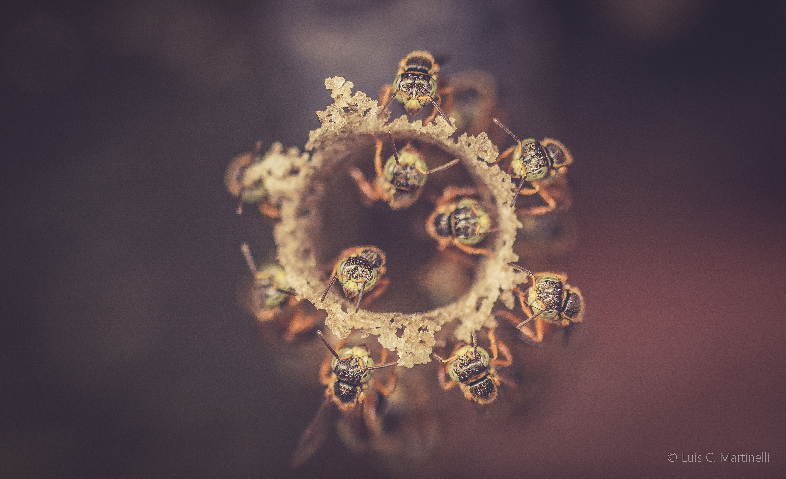
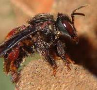
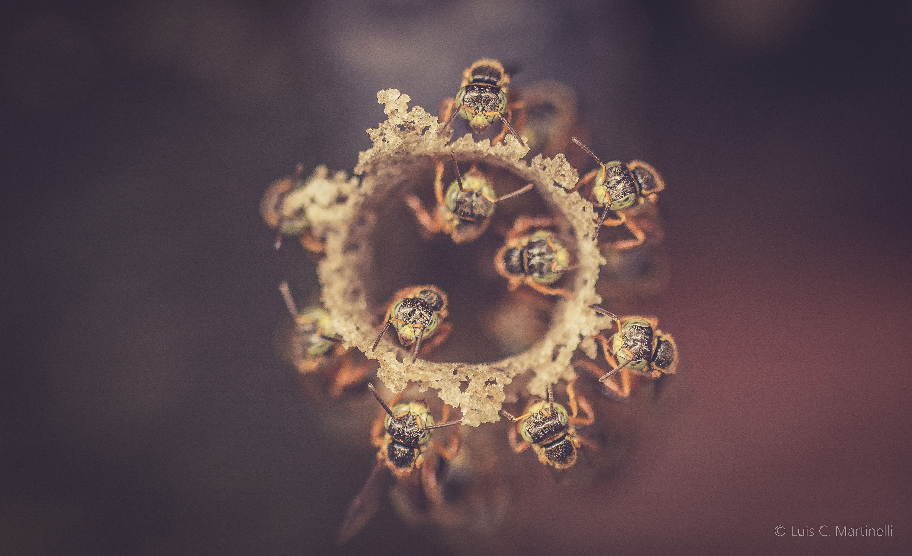
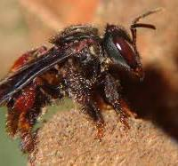

Claryanne
Mel
Quem sou eu?
Chamo-me Claryanne Mel, uma jovem de 16 anos com raízes fincadas na encantadora Santana do Piauí. Atualmente, sou estudante no IFPI-campus Picos, onde cada dia é uma nova jornada de aprendizado. Cresci em meio às abelhas, filha dedicada de um apicultor apaixonado, o que me inspirou a conceber um site inteiramente dedicado a esses seres fascinantes. O objetivo é compartilhar e celebrar o mundo incrível das abelhas, essenciais para a biodiversidade do nosso planeta.
O que são abelhas?
As abelhas são insetos voadores que pertencem à ordem Hymenoptera e à família Apidae. Elas são conhecidas por sua capacidade de polinizar plantas e produzir mel. O corpo das abelhas é dividido em três partes principais: cabeça, tórax e abdômen. Elas possuem seis pernas, antenas e asas membranosas. As abelhas vivem em colônias organizadas com abelhas sociais, como operárias, rainhas e zangões. As operárias desempenham várias funções na colônia, enquanto as rainhas têm a função reprodutiva. Os zangões são os machos reprodutores. A partenogênese é o processo reprodutivo realizado pelas abelhas para gerar descendentes. Quando não fecundado, o embrião apresenta material genético apenas da mãe, originando machos haploides. Com a fecundação do ovo, surgem as abelhas-operárias e rainhas .
Quais especies existem no Brasil?
No Brasil, encontramos uma diversidade rica de espécies de abelhas. Elas desempenham um papel fundamental na polinização de várias culturas agrícolas. Algumas das espécies notáveis incluem a Mandaçaia, valente e abundante no norte e nordeste do país; a Iraí, dócil e produtora de mel de qualidade; e outras como Uruçu, Jataí, Abelha-cachorro, Asa-branca, Sanharó. Essas abelhas nativas contribuem para a biodiversidade e a saúde de nossos ecossistemas, mas muitas enfrentam ameaças de extinção devido ao desmatamento. A preservação dessas espécies é crucial para as gerações futuras.

 


